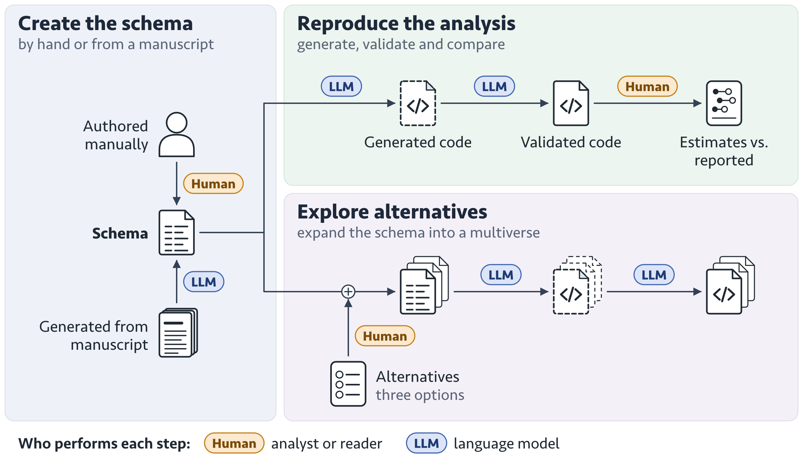
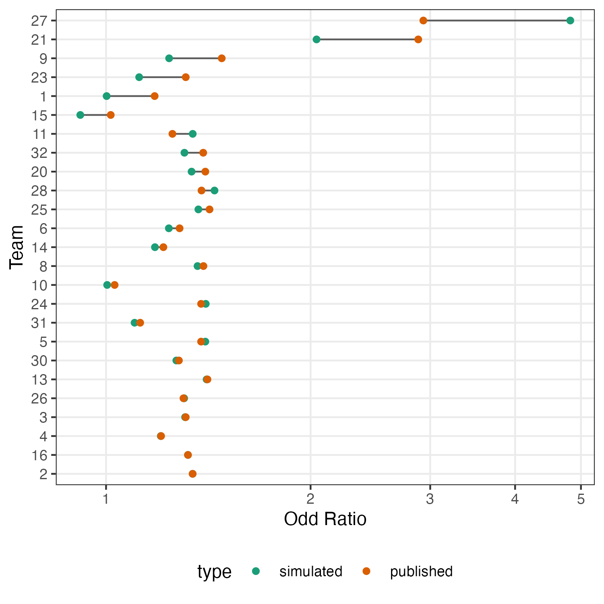

Code availability is not enough: A schema-based representation for comprehensible and extensible data analysis
Abstract
Current reproducibility practices have greatly improved our ability to replicate published results, but they do not necessarily make data analyses easier to understand. Audience seeking to comprehend an analysis need to piece together information scattered across manuscripts and code scripts to understand the sequence of analytical steps and the rationale behind them, with some details may not explicitly recorded in either source. Exploring alternative analytical choices is even more challenging, as it requires understanding and modifying code that may be unfamiliar and consider how it would impact upstream and downstream code. To address these challenges, we propose a schema that represents data analyses as a collectino of analytical decisions, together with their justification, inputs, and outputs. Coupled with large language models (LLMs), the schema can be inferred from natural language descriptions and translated into analysis scripts. The structured representation also enables exploration of alternative analytical choices, allowing multiple analytical workflows to be generated and compared. We demonstrate the proposed workflow using the many-analysts football study, where LLMs create the schema from the decision chocies in team reports, generate corresponding analysis scripts, and explore alternative random effect specifications. As an intermediate representation between the manuscript and code scripts, our schema makes analyses more comprehensible and extendable from a reader’s perspective.
Keywords
Reproducibility, Large Language Models (LLMs), Data analysis
1 Introduction
The reproducibility movement has been a major development in modern scientific research, motivated in part by concerns regarding the replication of published findings and the increasing reliance on computational methods across disciplines. In statistics, advocates of reproducible research argue that scientific claims should be accompanied by the data and code necessary to regenerate reported results (Peng 2011). These practices have greatly improved the reproducibility of published results across scientific domains (Kohler et al. 2026; Xu and Yang 2026) and have been incorporated into journal policies through data and code availability requirements (see the Journal of the American Statistical Association editorial (Wrobel et al. 2024)).
An implicit assumption underlying current practices is that reproducibility implies understandability, given that the data and the code required to reproduce the results are available to readers. Specifically, understandable implies that an independent researcher should be able to, without much difficulty, track the decisions made by the authors, understand the rationale behind those decisions, and confortably modify the code to explore alternative choices. As data analysis grown in complexity in modern applied research, understanding a piece of analysis has become non-trivial. Decisions related to data preprocessing and exploratory data analysis are often reported only briefly in manuscripts and left as technical details for readers to infer from supplementary materials. Many decisions are not made in a linear fashion but emerge through an iterative process (Jun et al. 2022a; b; Zhang and Peng 2025), and it is not entirely clear how this iterative nature of data analysis can be communicated. Making changes to an existing script can often be difficult because analytical decisions are intertwined with implementation details, project-specific abstractions, and dependencies across different parts of the workflow, requiring readers to consider how modifications propagate through upstream and downstream components. As a result, readers seeking to understand, modify, or extend an analysis must often spend a non-trivial amount of the time to piece together information scattered across manuscripts, code scripts, and supplementary materials to fully understand an analysis. Recent advances in LLMs have shown strong capabilities for code generation tasks including code completion and repair (Jiang et al. 2026; Shah et al. 2026), opening new opportunities for making data analysis easier to comprehensible, modifiable, and adaptable.
In this paper, we present a schema designed to describe data analysis in a structured way that captures the decisions and their justifications, as well as the inputs and outputs of each step. We also demonstrate how this schema, coupled with LLMs, can be used to generate code scripts from natural-language descriptions in manuscripts, and explore alternative decision choices. We apply our schema to the many-analyst football study, where LLMs create the schema from the decision choices reported in the final reports of each team, and generate and validate the corresponding code scripts against the original published results. We further demonstrate how to the schema supports specification and exploration of alternatives random effect specification for Team 5.
The paper is organized as follows: in Section 2, we review the relevant literature on reproducibility and communicaition of data analysis, as well as the application of LLMs in data science. In Section 3, we present our methodology, including the schema representation for describing data analysis and the workflow for generating and validating code from the schema by LLMs. In Section 4, we apply our methodology to the many-analyst football and demonstrate that we can reproduce the results reported in the paper, identify errors in the original reports, and highlight failure modes of current LLMs. Finally, in Section 5, we discuss the implications of our work and potential future directions.
2 Literature review
2.1 Large Language Models for Data Analysis
Advances in Large Language Models (LLMs) have led to widespread use of these systems for code generation tasks, including code completion and program repair (Jiang et al. 2026; Shah et al. 2026). Early work on code-oriented LLMs demonstrated strong capabilities in translating natural language descriptions into executable programs, with models such as Codex achieving substantial improvements on benchmark programming tasks (Chen et al. 2021; Huang et al. 2022; Lai et al. 2023). These capabilities have led to broad adoption of coding assistants thorugh web interfaces, APIs and integrated development environments. In the R ecosystem, packages such as ellmer (Wickham et al. 2025), chatLLM (Owusu Boakye 2026a), and LLMAgentR (Owusu Boakye 2026b) provides increasingly accessible interfaces for access to latest LLM models.
Building on these advances, recent work explores fully automated systems that use multiple LLM agents to plan, generate, execute, and refine data analyses (Hu et al. 2024; Jansen et al. 2025). Our work relies on the same underlying capability of translating analytical specifications into code, but differs in its view of what should be automated. Data analysis is often underdetermined, with many plausible choices regarding data preprocessing, transformation, aggregation, and model specification (Bertran et al. 2026; Gao and Xiao 2026; Luo et al. 2025), by contrast, once these analytical decisions have been specified, translating them into executable code is often a comparatively straightforward task. This distinction motivates our focus on representing analytical decisions explicitly and using LLMs to translate those decisions into code.
3 Methodology
3.1 A schema for describing data analysis
We represent a data analysis, \(\mathcal{S} = \{A_1, A_2, \cdots, A_n\}\), as a sequence of \(n\) analytical step \(A_i\), applied to a dataset \(\mathcal{D}\), where each step, \(A_i\), is defined as a tuple:
\[\begin{equation} A_{i} = \langle f_{i}, \pi_{i}, r_{i}, \mathcal{I}_{i}, \mathcal{O}_{i}, \omega_{i} \rangle. \end{equation}\]
The components of \(A_i\) can be partitioned into two parts: a required triplet \((f_{i}, \pi_{i}, r_{i})\) and an optional triplet \((\mathcal{I}_{i}, \mathcal{O}_{i}, \omega_{i})\). The first component of the triplet, \(f_{i} \in \mathcal{F}\) is the objective of a step. The second component, \(\pi_{i} \in \Pi\), represents the specific decision made to achieve the objective \(f_{i}\) and the term \(r_{i}\) is the justification provided for choosing the decision \(\pi_{i}\). Structuring this information into a schema involves defining the three components described above for each step. While the decision (what has been done) and the justification (why it is done) are generally clear, the objective requires identifying what the step is trying to achieve. In other words, it represents the broader goal that could potentially be fulfilled through other alternative choices (formally introduced in Section 3.2). As an example, consider the description for calculating the Human Development Index (HDI):
- Scale all four variables (life expectancy, expected years of schooling, mean years of schooling, and GNI per capita) to the [0, 1] range.
- Combine the two education variables (expected years of schooling and mean years of schooling) into a single education variable.
- Combine the three dimensions (health, education, and income) into a single index using a geometric mean.
In Step 3, the objective is to combine the three dimensions. While a simple arithmetic mean could be an alternative decision to fulfill this goal, the geometric mean (the decision) is chosen because it penalizes uneven development among the three dimensions (the justification). The full schema for constructing HDI is presented in Listing 1.
meta:
type: schema
nodes:
- tag: step-scaling
objective: how to handle variables in different scales?
decision: apply min-max scaling to each variable
rationale: to convert the variables to the same scale for future
construction of a single index
- tag: step-education
objective: how to combine the two education-related variables?
decision: take the average
rationale: the arithmetic mean allows perfect substitutability
between the two variables
- tag: step-combine
objective: how to combine the three dimensions into a single index?
decision: use the geometric mean
rationale: the geometric mean penalizes uneven development
among the three core dimensionsOn the optional components of a data analysis step \(A_i\), the operational flow of the analysis is governed by the input and output spaces, \(\mathcal{I}_{i}\) and \(\mathcal{O}_{i}\) respectively, once a dataset is provided. While the output of a step can be a pseudo object that not currently exist in the dataset, the inputs for any given step must be within the existing data scope, comprising variables in the original dataset and all outputs from previous steps. Formally, we require:
\[\mathcal{I}_{i} \subseteq \left( \mathcal{D} \cup \bigcup_{j < i} \mathcal{O}_{j} \right), \quad \forall i \in \{2, \dots, n\}.\]
When the schema is extracted automatically by Large Language Models (LLMs) from text, the inputs and outputs will be inferred by the LLMs, if a dataset is provided. We also introduce a categorical confidence score, \(\omega_{i}\) (low, medium, high) that can be useful in case when the source text is ambiguous to guide the LLM to ask for clarification to consolidate the schema extraction.
3.2 Describing alternatives
At each step, one decision choice is made by the researchers to address an objective, however the choice is often not the only possible one. For step \(i\), there could be \(k_i\) decision choices that fulfill the objective \(f_i\): \(\{ A_{i}^{1}, A_{i}^{2}, \dots, A_{i}^{k_i} \}\). We can define a selection vector \(r = (r_1, r_2, \dots, r_n)\), where \(r_i \in \{1, \dots, k_i\}\), to describe an analysis comprised of specific series of decisions: \(\mathcal{S}^{r} = \{ A_{1}^{r_1}, A_{2}^{r_2}, \dots, A_{n}^{r_n} \}\). A multiverse, used to describe the entire decision space, is defined as the Cartesian product of these sets: \(\mathcal{M} = \{ \mathcal{S}^r \mid r_i \in {1, \dots, k_i}, \forall i \}\). The cardinality of this space, \(|\mathcal{M}| = \prod_{i=1}^n k_i\), quantifies the total number of unique, fully-specified analysis.
Returning to the HDI example, in Step 3, instead of a geometric mean, an arithmetic mean is another possibility to combine the three dimensions into a single index. It may not be the best decision, but still a plausible one to derive a single index from the three dimensions, hence achieve the objective of this step. Listing 2 shows the structure of an alternative YAML file. The meta section identifies the file type (an alternative file rather than a schema file) and specifies the analysis step and the objective under consideration. Individual alternatives are defined as entries in the alternatives list, allowing multiple alternatives to be specified within a single file.
meta:
type: alternative
step: step-combine
objective: how to combine the three dimensions into a single index?
alternatives:
- id: arith-mean
decision: use an arithmetic mean
rationale: a simple average of the three dimensions3.3 Workflow
The overall workflow for schema-based data analysis is illustrated in Figure 1. A schema can be created either manually from the template or automatically by an LLM from a natural-language manuscript. Once created, the schema serves as a structured specification that guides a second LLM in generating the code for the analysis. To improve reliability, our design includes a third LLM agent which is responsible for code validation. While the latest LLMs can generate reasonable code based on prompt, they do not consistently achieve perfect accuracy. The validation process runs the generated script in a sandbox environment and if an error occurs, a third LLM agent will be employed to diagnose the script. The validation agent receives the generated code together with the error message and the correponding line number produced during the execution, and returns a newer version of the script. The revised script is then re-executed in the sandbox and this cycle continues until one of the three conditions is met: the code runs successfully, a maximum number of attempt is reached, or the user terminates the process. As will be show in Section 4, this validation process resolves the majority of R syntax issues encountered during data wrangling and statistical modelling tasks. On top of supporting a single analytical specification, the workflow also allows users to agument a schema with an alternative YAML file. This expands the original schema into a multiverse of parallel schemas, each representing a different sequence of decision choices. The same code generation and validation workflow is then applied independently to each schema, producing a corresponding set of validation scripts.
3.4 Usage
The schema workflow is useful for both readers and authors of a paper. From the reader’s perspective, the schema makes it easier to explore alternatives of an analysis through natural language interaction. In addition, modifying a code script typically requires coordinating changes across upstream and downstream components, the proposed workflows enables such code generation to be automated with LLMs. From an author’s perspective, the schema can be included in the supplementary materials, where it serves to document the data analysis workflow in a procedural but descriptive manner.
4 Application: many-analysts football study
In this section, we apply our methodology to the many-analyst football by Silberzahn et al. (2018) to reproduce the reported estimated effect size by each team. During this process, we identify some errors in the original reports and highlight failure modes of current LLMs.
Silberzahn et al. (2018) invites 29 research groups to conduct the same data analysis to answer the question whether soccer referees are more likely to give red cards to dark-skin-toned player than to light-skin-toned players. The provided dataset contains two raters’ skin color rating to players’ picture, the aggregated number of red card received by a player from a referee across all matches in that player-referee pair, and other relevant player, referee, and game characteristics: player birthday, height, weight, player position, league country, number of victories, ties, and defeats, and number of yellow and red cards received. Most participating groups take a modelling approach to estimate the effect of skin rating on the red card issued with variation in distributional assumptions (linear, logistic, and poisson) and in the specification of fixed and random effects. In Silberzahn et al. (2018), each group first conducted an initial analysis separately, followed by a round-robin peer evaluation. Each group was then gave the opportunity to incorporate feedback from the discussion and submitted a final analysis as a report with a formal Method section. All the materials related to the study is publicly available on the Open Science Framework (OSF).
From the report presented by each team, we can use LLM to convert the methodology description into the schema we propose and generate the corresponding code script. We observe that most reports are structured to first describe the initial data analysis and then the changes made in the final analysis. To avoid testing LLMs’ ability to reconstruct how analysis steps are modified, overturned, or carried over from the intial to the final analysis, we extract the descriptions relevant to the final analysis.
We send the text description of each team for LLM to generate the schema and then generate the code script from the schema. The code script is run by a separate LLM to validate for potential syntax errors.
To accelerate the evaluation of each script, we manually in-place replace the glm() command with fixest::feglm() (Bergé et al. 2026) for generalized linear model and the lme4::glmer() (Bates et al. 2015) function with glmmTMB::glmmTMB() (Brooks et al. 2017) for generalized mix-effect model after the scripts are generated but before the validation. These two functions are in-place replacements of the standard functions for estimating the relevant model with multi-threading in C++ (Bergé et al. 2026) and Template Model Builder (TMB) (McGillycuddy et al. 2025) for better performance. This replacement should not affect the estimation of the effect size. All the LLM-related simulations are conducted with claude-opus-4.5.
Across the 25 teams we reproduce, all team scripts were successfully executed after the validation phase. Notably, two scripts run successfully without any validation whereas the vast majority reached completion after two or three iterations. The most frequent correction involved resolving broken and overflow syntax in comments.

Figure 2 shows the comparison of the estimated effect size, in odd ratio, from our workflow (simulated) and those reported in Silberzahn et al. (2018) (published). Our workflow successfully recovers the odd ratio reported in most teams, although larger variation is observed in the following teams: Team 1, 9, 15, 21, 23, and 27. We further investigate the reports and generated scripts for these teams and find that the discrepancy arises from a combination of ambiguities from the report and LLM’s accuracy.
- Team 27: the difference comes from the ambiguity of the method description, the authors state that “In addition to the independent variables specified in the initial approach, … a variable for player position was included, as well as a variable for the league of the player.” This description could be interpreted as a shorthand for extending the model with the interaction of additional covariates as how other covariates enters the mdoel in the initial approach, but the LLM adopts a literal interpretation with only the main effect.
- Team 9: the authors describe “referee country” in the text as a covariate for the model, but the reported estimation table suggests they use “player country” instead.
- Team 1 and 23: the discrepency comes from the LLM fails to properly reshape the data from player-referee pair level to game level, which requires disaggregate the win, loss, and draw count into individual game records. The schema properly identifies this step but the generated code doesn’t execute this step properly and create a silent error with the validator.
- Team 15: the discrpency comes from the default setting for estimating factor variable in R (our similuation) and SPSS (original script). In SPSS, the factor variables are estimated with effect coding, where the coefficients are compared to the grand mean, rather than to the reference group (dummy coding) in R. After changing the
contrastoption in R, we obtain the reported odd ratio.
4.1 Exploring alternatives
During the modelling process, researchers may consider a range of alternative specifications, such as different covariate and random effects structures, before arriving at a final model. This can be seen as a set of alternative decisions within the same modelling step, which fits naturally into the schema workflow described in Section 3.2. As an example, we use Team 5 for the above football study to demonstrate the use case. Team 5 uses a binomial generalized linear mixed model (GLMM) to estimate the effect of skin tone rating on the number of red cards received using a logit link function, but tests different random effect structures:
\[\begin{align*} \textbf{Model 1 (gm1):} \quad \text{logit}(p_{ijk}) &= \beta_0 + \beta_1 X_{ijk} + u_{j} + v_{k} \\ u_{j} &\sim N(0, \sigma^2_{\text{player}}), \quad v_{k} \sim N(0, \sigma^2_{\text{ref}}) \\[1.5em] \textbf{Model 2 (gm2):} \quad \text{logit}(p_{ijk}) &= \beta_0 + \beta_1 X_{ijk} + u_{j} + v_{0k} + v_{1k} X_{ijk} \\ u_{j} &\sim N(0, \sigma^2_{\text{player}}), \quad \mathbf{v}_{k} \sim N\left(\mathbf{0}, \boldsymbol{\Sigma}_{\text{ref}}\right) \\[1.5em] \textbf{Model 3 (gm3):} \quad \text{logit}(p_{ijkm}) &= \beta_0 + \beta_1 X_{ijkm} + u_{j} + v_{k} + w_{0m} + w_{1m} X_{ijkm} \\ u_{j} &\sim N(0, \sigma^2_{\text{player}}), \quad v_{k} \sim N(0, \sigma^2_{\text{ref}}), \quad \mathbf{w}_{m} \sim N\left(\mathbf{0}, \boldsymbol{\Sigma}_{\text{country}}\right) \end{align*}\]
where \(p\) denotes the probability of a player receiving a red card, and \(X\) represents the player’s skin tone rating. The subscripts \(i, j, k,\) and \(m\) index the individual observation, player, referee, and the referee’s home country, respectively. The parameter \(\beta_0\) represents the global baseline log-odds of receiving a red card, and \(\beta_1\) estimates the fixed effect of a player’s skin tone. The random effect include
- a random intercept for players, \(u_j \sim N(0, \sigma^2_{\text{player}})\), in Model 1, 2, and 3,
- a random intercept for referee, \(v_k \sim N(0, \sigma^2_{\text{ref}})\), in Model 1 and 3, an additional random sloope for referee in Model 2, and
- a random intercept and slope for referee countries, \(\mathbf{w}_{m} \sim N\left(\mathbf{0}, \boldsymbol{\Sigma}_{\text{country}}\right)\), in Model 3.
These alternatives are specified in a separate YAML file described in Section 3.2 as Listing 3. This file is then merged with the original schema to produce one separate schema for each alternative for code generation and validaiton. The validated scripts are then executed to obtain the estimated random effects in Table 1. This results matches with the random effects reported in the team report, subject to rounding errors. Similarly, the model fitting statistics can be extracted from the estimation for selecting the best fit.
meta:
type: alternatives
step: specify_random_effects_structure
fork: how to account for the non-nested cross-classified data structure
alternatives:
- id: "gm1"
path: "a random effect of player and referee"
rationale: ""
- id: "gm2"
path: "a random effect of player and referee, and a random effect
of skin-tone across referees"
rationale: ""
- id: "gm3"
path: "a random effect of player, referee, and referees' countries
of origin, and a random effect of skin tone across referees'
countries of origin"
rationale: ""| group | term | gm1 | gm2 | gm3 |
|---|---|---|---|---|
| playerShort | var__(Intercept) | 0.3737 | 0.3738 | 0.2899 |
| refNum | var__(Intercept) | 0.1528 | 0.1932 | 0.0748 |
| refNum | var__avgrate01 | NA | 0.0286 | NA |
| refCountry | var__(Intercept) | NA | NA | 0.3990 |
| refCountry | var__avgrate01 | NA | NA | 0.0870 |
5 Discussion
Our results highlight a persistent gap between computational reproducibility and analytical understandability in modern data analysis workflows. While current reproducibility practices ensure that published results can be regenerated from shared data and code, as analyses grow in complexity and involve iterative decision-making processes, they are less of an idea for readers to understand the analysis. Our proposed schema addresses this gap by introducing an intermediate representation that explicitly encodes analytical decisions to bridge between narrative descriptions and implementation details. When coupled with large language models, this representation enables the extraction of analytical structure from written reports and its translation into analysis scripts, while also supporting the exploration of alternative analytical choices.
To further examine how this workflow behaves in practice, we apply it to the many-analysts football study. This analysis allows us to identify errors in the original reports and to characterize failure modes of current LLMs to generate code for data science. In particular, we find that LLMs requires a fairly precise specification in order to generate the code correctly for the intended random effect structure. For an educated statistician, the phrase “a random effect of referee number across average rating” would typically imply both a random intercept and a random slope. However, we observe that LLMs interpret this speicification literally as a random slope only. This suggests the gap between the latest models and human analysts in specialized statistical knowledge (Sun et al. 2026).
Across the validation process, the LLM successfully corrects a range of implementation issues, including errors caused by overflowing comments and other syntax issues. However, we also observe challenges in data reshaping tasks when the transformation requires changes in the unit of analysis. In the study, some teams decide to transform the data from the original aggregated player-referee dyad-level format to game-level format. This transformation requires disaggregating aggregated outcome counts (win, loss, and draw) into individual game records, changing the unit of analysis from dyads to matches. We also observe some difficulties in parsing birth dates. Since the LLM does not have access to the underlying raw data, due to privacy constraint, it must rely on trial and error when inferring the correct date formats (“DD-MM-YYYY.”). This suggests that certain types of data analysis tasks may not be fully automatable in settings where the model cannot directly inspect the data, even if the data is theoretically available for computation.
Appendix
Built-in prompts
Prompt: Extracting the schema from the text
You are an expert methodologist and data pipeline architect. I will
provide a text describing a multiverse analysis and a summary of the
actual dataset being used.
=== YOUR TASK ===
Extract a chronological list of methodological decisions (nodes) AND
map the exact data flow (inputs/outputs) for each node
simultaneously.
=== RULES ===
1. THEORY EXTRACTION: For each node, extract:
- 'id': A unique snake_case identifier.
- 'fork': MUST be framed as an open methodological goal that invites
multiple possible approaches. It must NOT describe the final choice.
- 'path': A 'path' is strictly a POSITIVE methodological decision
that has potential theoretical alternatives, chosen to resolve the
'fork'.
- 'rationale': WHY that decision (the path) was made, extracted from
the text.
2. DATA MAPPING: Assign 'inputs' (EXACT column names from the dataset
OR outputs from previous nodes) and 'outputs' (invented snake_case
objects like 'df_clean' or 'ranef_spec').
3. ANTI-ABSTRACTION (CRITICAL): If the text lists specific variables
(e.g., 'centered rater, meanIAT'), DO NOT summarize them away. You
MUST capture those specific variables in the 'inputs' array.
4. INLINE ARRAYS: Format arrays strictly on one line: `inputs: [var1,
var2]`.
5. CONFIDENCE & CLARIFICATION: Rate your mapping confidence (HIGH,
MEDIUM, LOW). If the text abstracts a step and you cannot confidently
match it to specific dataset columns, set confidence to LOW and
autogenerate a 'clarification_question' asking the user which exact
columns to use. If HIGH, output 'null'.
6. Output ONLY valid YAML without markdown formatting.
=== REQUIRED YAML STRUCTURE EXAMPLE ===
meta: type: schema nodes: - fork: variables are in different scales
path: apply min-max scaling to each variable justification: to put
them on the same scale for combination id: step-scaling confidence:
high - fork: combine the school variables into one dimension path:
average exp sch and avg sch justification: the most intuitive way id:
step-education confidence: low
=== DATASET SUMMARY ===
NA
=== METHODOLOGY TEXT ===
[inset text here]
Prompt: generating code from the schema
You are an expert R programmer. Attached is a text document
containing a SCHEMA that defines a data processing pipeline.
No data file is specified - if data loading is required, use a
sensible placeholder or note it in a comment. Your task is to write a
complete, working R script that implements this pipeline
step-by-step. Use modern R practices (like dplyr or base pipe) and
ensure variables flow correctly from one step to the next as defined
by the inputs and outputs. Output ONLY the complete R script. Do not
start with markdown formatting blocks (like ```R) or backticks.
Prompt: validating the code generated
You are an expert R developer and automated debugging agent. The user
has provided a data file located at the relative path: `data/[insert
the path to the data]'. Your purpose is to receive broken R scripts,
diagnose the execution error, and return the corrected script.
CRITICAL INSTRUCTIONS: 1. Fix the bug while preserving the original
intent and logic of the script. 2. If the error is a missing
package, add the necessary `library()` call at the top. 3. If the
error is a missing variable, ensure it is properly initialized before
use. 4. Do NOT hallucinate new data files or external dependencies
unless explicitly provided in the context.
STRICT OUTPUT CONSTRAINTS: - You must output ONLY valid, fully
executable R code. - Absolutely NO markdown formatting. Do NOT wrap
your response in ```R or ```. - Absolutely NO conversational filler,
greetings, explanations, or comments about what you fixed. - The
first character of your response must be R code, and the last
character must be R code.
Prompt: generating alternatives for a specific step
You are an expert Data Analyst and Methodologist. You are reviewing
an analysis schema to identify "Forking Paths" -- alternative
analytical choices that are equally valid but distinct from the
current approach.
=== DEFINITIONS ===
The schema provided to you consists of steps with:
- **ACTION**: The goal of the step (What needs to be done).
- **DECISION**: The specific implementation chosen (How it is done).
- **JUSTIFICATION**: The reasoning behind that decision.
- **ID**: The unique identifier for the step (kebab-case).
=== TASK ===
Focus specifically on the step tagged: "[inset step number here]".
Your goal is to generate 3 distinct, valid alternatives for this
step.
For each alternative: 1. **Keep the same ACTION** (the goal remains
constant).
2. **Change the DECISION** to a different but methodologically sound
approach.
3. **Provide a new JUSTIFICATION** explaining why this alternative is
valid.
4. **Create a new ID** that reflects the new decision (must be
kebab-case).
=== OUTPUT FORMAT ===
Please output the result in **strictly valid YML format**.
**Crucial Formatting Rules:**
1. Include a `meta` section at the top with `type: alternative` and
the `step`.
2. Output strictly valid YML. All text values (decision,
justification) must be enclosed in double quotes ("). Do not use
block styles (| or >). Do not wrap lines or insert \n characters
within the quotes; keep the text as a single continuous string.
3. Do not include markdown code fences (like ```yml) or
conversational text. Just the raw YML.
=== REQUIRED YML STRUCTURE EXAMPLE ===
meta: type: tines_alternative step: [inset step number here]
alternatives: - id: step-new-method-name action: Repeat the original
action decision: "Description of the new decision..." justification:
"This is the reasoning for why this alternative is valid." - id:
step-another-method ...6 References
Bates, D., Mächler, M., Bolker, B., and Walker, S. (2015), “Fitting linear mixed-effects models using lme4,” Journal of Statistical Software, 67, 1–48. https://doi.org/10.18637/jss.v067.i01.
Bergé, L. R., Butts, K., and McDermott, G. (2026), “Fast and user-friendly econometrics estimations: The R package fixest,” arXiv preprint arXiv:2601.21749. https://doi.org/10.48550/arXiv.2601.21749.
Bertran, M., Fogliato, R., and Wu, Z. S. (2026), “Many AI Analysts, One Dataset: Navigating the Agentic Data Science Multiverse,” arXiv. https://doi.org/10.48550/arXiv.2602.18710.
Brooks, M. E., Kristensen, K., van Benthem, K. J., Magnusson, A., Berg, C. W., Nielsen, A., Skaug, H. J., Maechler, M., and Bolker, B. M. (2017), “glmmTMB balances speed and flexibility among packages for zero-inflated generalized linear mixed modeling,” The R Journal, 9, 378–400. https://doi.org/10.32614/RJ-2017-066.
Chen, M., Tworek, J., Jun, H., and others (2021), “Evaluating large language models trained on code,” arXiv preprint arXiv:2107.03374.
Gao, R., and Xiao, S. C. (2026), “Nonstandard Errors in AI Agents,” arXiv. https://doi.org/10.48550/arXiv.2603.16744.
Hu, S., Lu, C., and Clune, J. (2024), “Automated Design of Agentic Systems.”
Huang, J., Wang, C., Zhang, J., Yan, C., Cui, H., Inala, J. P., Clement, C., and Duan, N. (2022), “Execution-based Evaluation for Data Science Code Generation Models,” in Proceedings of the Fourth Workshop on Data Science with Human-in-the-Loop (Language Advances), eds. E. Dragut, Y. Li, L. Popa, S. Vucetic, and S. Srivastava, Abu Dhabi, United Arab Emirates (Hybrid): Association for Computational Linguistics, pp. 28–36. https://doi.org/10.18653/v1/2022.dash-1.5.
Jansen, J. A., Manukyan, A., Khoury, N. A., and Akalin, A. (2025), “Leveraging large language models for data analysis automation,” PLOS ONE, 20, e0317084. https://doi.org/10.1371/journal.pone.0317084.
Jiang, J., Wang, F., Shen, J., Kim, S., and Kim, S. (2026), “A survey on large language models for code generation,” ACM Transactions on Software Engineering and Methodology, ACM New York, NY, 35, 1–72.
Jun, E., Birchfield, M., De Moura, N., Heer, J., and Just, R. (2022a), “Hypothesis formalization: Empirical findings, software limitations, and design implications,” ACM Transactions on Computer-Human Interaction (TOCHI), ACM New York, NY, 29, 1–28.
Jun, E., Seo, A., Heer, J., and Just, R. (2022b), “Tisane: Authoring statistical models via formal reasoning from conceptual and data relationships,” CHI ’22, New York, NY, USA: Association for Computing Machinery, p. 116. https://doi.org/10.1145/3491102.3501888.
Kohler, B., Zollikofer, D., Einsiedler, J., Hoyle, A., and Ash, E. (2026), “Read the Paper, Write the Code: Agentic Reproduction of Social-Science Results,” arXiv. https://doi.org/10.48550/arXiv.2604.21965.
Lai, Y., Li, C., Wang, Y., Zhang, T., Zhong, R., Zettlemoyer, L., Yih, W.-T., Fried, D., Wang, S., and Yu, T. (2023), “DS-1000: A Natural and Reliable Benchmark for Data Science Code Generation,” in Proceedings of the 40th International Conference on Machine Learning, PMLR, pp. 18319–18345.
Luo, A., Du, J., Tian, F., Xian, X., Specht, R., Wang, G., Bi, X., Fleming, C., Srinivasa, J., Kundu, A., Hong, M., and Ding, J. (2025), “Can Agentic AI Match the Performance of Human Data Scientists?” in 2025 IEEE 10th International Workshop on Computational Advances in Multi-Sensor Adaptive Processing (CAMSAP), pp. 206–210. https://doi.org/10.1109/CAMSAP66162.2025.11423949.
McGillycuddy, M., Warton, D. I., Popovic, G., and Bolker, B. M. (2025), “Parsimoniously fitting large multivariate random effects in glmmTMB,” Journal of Statistical Software, 112, 1–19. https://doi.org/10.18637/jss.v112.i01.
Owusu Boakye, K. D. N. (2026a), chatLLM: A flexible interface for ’LLM’ API interactions. https://doi.org/10.32614/CRAN.package.chatLLM.
Owusu Boakye, K. D. N. (2026b), LLMAgentR: Language model agents in r for AI workflows and research. https://doi.org/10.32614/CRAN.package.LLMAgentR.
Peng, R. D. (2011), “Reproducible Research in Computational Science,” Science, American Association for the Advancement of Science, 334, 1226–1227. https://doi.org/10.1126/science.1213847.
Shah, S. M. H., Hopfgartner, F., and Bleier, A. (2026), “Automating Computational Reproducibility in Social Science: Comparing Prompt-Based and Agent-Based Approaches.” https://doi.org/10.1145/3774905.3795485.
Silberzahn, R., Uhlmann, E. L., Martin, D. P., Anselmi, P., Aust, F., Awtrey, E., Bahník, Š., Bai, F., Bannard, C., Bonnier, E., Carlsson, R., Cheung, F., Christensen, G., Clay, R., Craig, M. A., Dalla Rosa, A., Dam, L., Evans, M. H., Flores Cervantes, I., Fong, N., Gamez-Djokic, M., Glenz, A., Gordon-McKeon, S., Heaton, T. J., Hederos, K., Heene, M., Hofelich Mohr, A. J., Högden, F., Hui, K., Johannesson, M., Kalodimos, J., Kaszubowski, E., Kennedy, D. M., Lei, R., Lindsay, T. A., Liverani, S., Madan, C. R., Molden, D., Molleman, E., Morey, R. D., Mulder, L. B., Nijstad, B. R., Pope, N. G., Pope, B., Prenoveau, J. M., Rink, F., Robusto, E., Roderique, H., Sandberg, A., Schlüter, E., Schönbrodt, F. D., Sherman, M. F., Sommer, S. A., Sotak, K., Spain, S., Spörlein, C., Stafford, T., Stefanutti, L., Tauber, S., Ullrich, J., Vianello, M., Wagenmakers, E.-J., Witkowiak, M., Yoon, S., and Nosek, B. A. (2018), “Many Analysts, One Data Set: Making Transparent How Variations in Analytic Choices Affect Results,” Advances in Methods and Practices in Psychological Science, 1, 337–356. https://doi.org/10.1177/2515245917747646.
Sun, M., Han, R., Jiang, B., Qi, H., Sun, D., Yuan, Y., and Huang, J. (2026), “LAMBDA: A Large Model Based Data Agent,” Journal of the American Statistical Association, Taylor & Francis, 121, 1–13. https://doi.org/10.1080/01621459.2025.2510000.
Wickham, H., Cheng, J., Jacobs, A., Aden-Buie, G., and Schloerke, B. (2025), Ellmer: Chat with large language models. https://doi.org/10.32614/CRAN.package.ellmer.
Wrobel, J., Hector, E. C., Crawford, L., McGowan, L. D., Silva, N. da, Goldsmith, J., Hicks, S., Kane, M., Lee, Y., Mayrink, V., Paciorek, C. J., Usher, T., and Wolfson, J. (2024), “Partnering With Authors to Enhance Reproducibility at JASA,” Journal of the American Statistical Association, Taylor & Francis, 119, 795–797. https://doi.org/10.1080/01621459.2024.2340557.
Xu, Y., and Yang, L. Y. (2026), “Scaling Reproducibility: An AI-Assisted Workflow for Large-Scale Replication and Reanalysis,” arXiv. https://doi.org/10.48550/arXiv.2602.16733.
Zhang, H. S., and Peng, R. D. (2025), “Inside Out: Externalizing Assumptions in Data Analysis as Validation Checks,” Journal of Data Science, School of Statistics, Renmin University of China, 1–18. https://doi.org/10.6339/25-JDS1206.